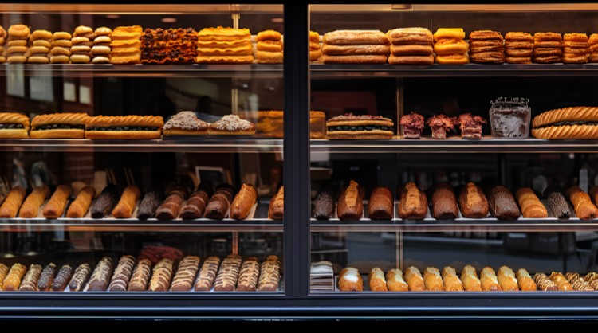
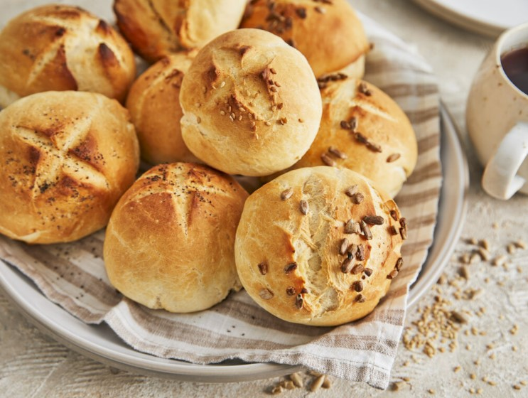
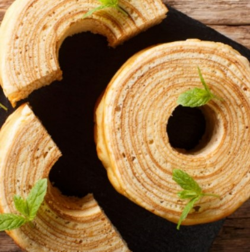

*표기 관련
독일어의 ‘Kuchen’은 우리말의 ‘케이크’로 똑같이 옮기기에는 다소 무리가 있지만 일반적인 ‘Kuchen’의 이미지가 케이크인 점을 고려해 ‘케이크’로 옮겼습니다. 참고해 주시기 바랍니다.
우리는 요즘 언제 어디서나 간편하게 빵을 먹는다. 빵은 훌륭한 식사가 되기도 하고 입가심으로 디저트의 역할을 동시에 수행할 수도 있는 대단한 음식이다. 종류도 다양해서 이것저것 먹어보는 재미까지 있다. 이렇게 가히 혁명적인 음식이라 할 수 있는 ‘빵’을 입에 대지 않는 사람은 지극히 드물 것이다. 하지만 당신이 아까 먹은 그 빵, 독일인들이 볼 때는 빵이 아니다.
아니, 빵이 다 같은 빵이지 뭐는 빵이고 뭐는 빵이 아니라니? 너무 갑작스러운 이야기를 꺼내서 게슈탈트 붕괴가 왔을 수도 있다. 충분히 이해한다. 다만 이는 한치의 거짓도 없는 사실이다. 지금부터 한국과 독일 사이의 빵 논란(?)에 종지부를 찍어 보도록 하자.
한국에서는 흔히 ‘밀가루를 반죽해 이스트를 넣고 발효시켜 오븐에서 구워낸 음식’을 ‘빵’이라 부른다. 여기서 잠깐, 우리는 먹을 것에 그 누구보다도 진심인 민족이다. 때문에 빵이 더 달콤하고 맛있어지도록 크림이나 잼, 혹은 슈가파우더와 같은 부가적인 재료를 추가하는 것은 이제 필수이다.독일 역시 ‘밀가루를 반죽해 이스트를 넣고 발효시켜 오븐에서 구워낸 음식’을 ‘빵’이라 부른다. 독일인들은 빵을 매우 사랑하는데, 백빵부터 흑빵까지 그 종류가 약 3000여 가지에 이를 정도로 매우 다양하다. 하지만 이제부터가 함정이다. 이렇게 수많은 빵 중에서 우리나라처럼 ‘달콤한’ 빵을 찾아볼 수 없다는 것이다.
독일에서는 빵에 무언가를 추가해 달콤하게 만들지 않는다, 절대로! 만약 달콤하게 만들었다면 그것은 빵이 아니라 무려 케이크다. 그러니까 당신이 아까 먹은 달달한 그 빵은 ‘빵’이 아닌 케이크에 가까운 무언가라는 뜻이다.
잠시 독일어 단어를 가져와 보자. 독일어에서는 달지 않게 만든, 그러니까 주식인 식사용 빵류를 ‘Brot’라 부르고, 디저트로 먹는 달콤한 케이크류를 ‘Kuchen’이라 부른다.
‘바움쿠헨(Baumkuchen)’의 ‘쿠헨’이 바로 이 ‘Kuchen’ 되시겠다. 물론 우리 같은 한국인들이 볼 때는 빵이나 케이크나 다 똑같은 밀가루로 만든 빵이다. 하지만 독일인들은 이를 엄격하게 구분한다. 독일의 빵은 곧 식사다. 그리고 디저트나 간식 같은 경우를 제외하고는 식사 시간에 절대 달콤한 빵(=케이크)을 먹지 않는다. 때문에 우리나라처럼 ‘식사용’ 빵을 달콤하게 먹는 것이 당연히 낯설 수밖에 없는 것이다.
그렇다면 독일인들은 그들의 ‘빵’을 어떻게 먹을까? 독일에서 사랑받는 빵 중에는 Brot 말고도 ‘Brötchen’이라는 게 있다. 주먹 만한 크기에 거칠고 단단한 겉면을 가지고 있지만, 칼로 갈라 보면 그 속은 제법 부드럽다(당연히, 절대 달콤하지 않다.). 이렇게 칼로 가른 Brötchen 사이 혹은 Brot 위에 마멀레이드를 바르고 치즈나 살라미를 곁들여 먹는 것이 전형적인 독일식 식사이다. 정리하자면 한국은 빵을 구울 때 반죽을 달게 만들어 이것저것 집어넣은 채로 굽는다면, 독일은 빵 자체는 단맛 없이 담백하게 굽고 먹을 때 무언가를 바르거나 곁들여 먹는 것이다.독일의 베이커리(Bäkerei)에 가면 이렇게 달지 않은 식사용 빵을 판다. 만약 당신이 독일에서 달콤한 빵을 찾고 싶다면 베이커리가 아닌 제과점(Konditor)에 가서 찾아야 한다. 한국에서는 제과점과 베이커리가 동의어인데, 독일에서는 이마저도 구분하는 것이다. 하지만 걱정은 덜어 두어도 괜찮다. 대부분의 베이커리가 친절하게 제과점까지 겸하고 있기 때문이다.
우리가 잘 알고 있는 나무테 모양 케이크인 바움쿠헨(Baumkuchen)은 세간에 ‘독일 빵’이라는 이름으로 알려져 있다. 하지만 이제 우리는 알 수 있다. 바움쿠헨의 본고장 독일에서 바움쿠헨은 빵이 아니라 달콤한 케이크라는 것을!
여기까지 다소 문화충격으로 다가올 수 있는 독일의 빵 문화에 대해 알아보았다. 뭐든 알고 먹으면 더 특별하고 맛있는 법이다. 달콤한 한국식 빵도 물론 맛있지만, 언젠가 독일에 가게 된다면 꼭 담백한 독일식 빵을 맛보도록 하자.